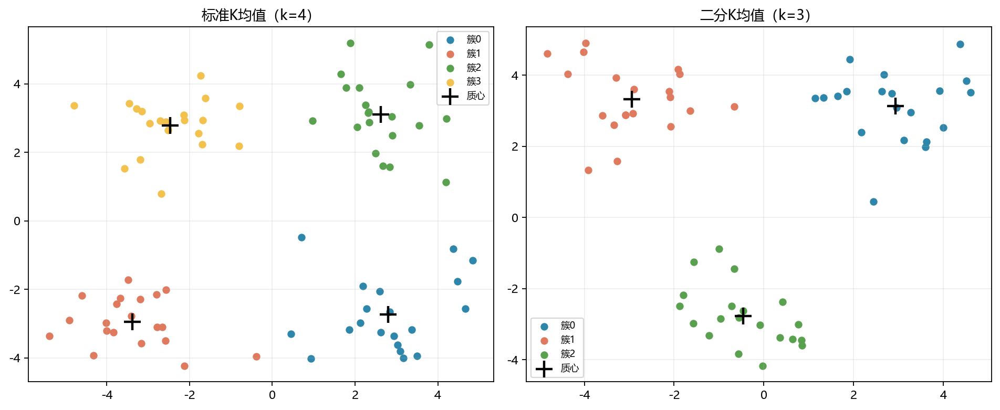

本周复现了《机器学习实战》第 10 章的标准 K 均值、二分 K 均值、球面距离和地图地点聚类。代码主线不长，但和前面的分类算法不同：训练数据没有类别标签，算法需要自己寻找数据中的分组结构。
这篇复盘主要记录
- 簇、质心和 K 分别是什么
- 标准 K 均值为什么要反复分配和更新
- SSE 能说明什么，不能说明什么
- 二分 K 均值与普通 K 均值有什么区别
一、K均值在解决什么问题
假设桌上混放着很多红豆、绿豆和黄豆，但颜色标签被遮住了。可以先随便选几个代表，再把每颗豆子放到离它最近的代表旁边，接着根据每堆豆子的平均位置重新选择代表。反复几次后，相近的豆子就会聚到一起。
在 K 均值中，每一堆叫作簇，代表位置叫作质心，K 表示最终想分成多少簇。算法只根据特征和距离工作，并不知道每簇在现实中应该叫什么名字。
分类是“根据已有答案学习怎样判断”，聚类是“没有答案时先看看数据自然分成了哪些组”。
二、标准K均值的四个步骤
- 在每个特征的取值范围内随机生成 K 个质心。
- 计算每个样本到所有质心的距离，把它分给最近的质心。
- 对每一簇中的样本求平均，得到新的质心。
- 如果样本所属的簇发生变化，就继续重复分配和更新。
核心循环可以概括为：
while clusterChanged:
clusterChanged = False
# 先把每个样本分到距离最近的质心
# 再用每一簇样本的平均值更新质心这和“分小组后重新选每组中心位置”很像。第一次代表是随机的，所以不同的初始质心可能走向不同的最终结果。
三、距离为什么要平方
书中使用欧氏距离，也就是平面上两点之间的直线距离：
distance = √((x₁-x₂)² + (y₁-y₂)²)
每个样本分簇后，代码还会保存它到所属质心的距离平方。所有距离平方相加就是 SSE：
SSE = Σ(样本到所属质心的距离²)
SSE 越小，说明样本整体上离各自质心越近，簇内更加紧凑。但 SSE 不能单独决定 K，因为增加簇数通常就能降低 SSE。若把每个样本都单独看成一簇，SSE 甚至会变为 0，却没有多少分析价值。
四、标准K均值的运行结果
在 testSet.txt 的 80 条二维数据上，设置 K=4、随机种子为 10。最终每簇正好有 20 条数据，SSE 为 149.954305，四个质心为：
[ 2.802931, -2.731515]
[-3.382370, -2.947336]
[ 2.626530, 3.108680]
[-2.461543, 2.787376]
五、普通K均值容易卡在哪里
K 均值每一轮都会让当前 SSE 不再增大，但它找到的可能只是局部最优。可以把它想成在有很多山谷的地面上放下一颗球：球会滚到附近的低处，却不一定滚到全局最低处。初始质心落在不同位置，最终簇和 SSE 就可能不同。
六、二分K均值怎样工作
二分 K 均值一开始把全部样本看成一个簇，然后每次挑一个现有簇拆成两簇。选择拆分对象时，会同时计算：
拆分后的两簇 SSE + 其他未拆分簇的 SSE
哪一种拆法让总 SSE 最小，就采用哪一种。重复拆分，直到达到指定的 K。它不是一次随机生成 K 个质心，而是逐步细分，因此在一些数据上可能比标准 K 均值得到更好的结果。
在 testSet2.txt 上设置 K=3、随机种子为 10，最终 SSE 为 106.749499，三个质心为：
[ 2.933864, 3.127828]
[-2.947376, 3.326378]
[-0.459656, -2.778216]这里的 SSE 不能和上一节直接比较高低，因为两个算法使用的不是同一份数据，K 也不同。要公平比较，必须固定数据、K 和评价方式。
七、地图上的距离不能直接照搬平面距离
地点数据使用经纬度。书中的 distSLC采用球面余弦定理，先计算两点在地球表面的夹角，再乘以地球半径 6371 千米。这样比直接把经纬度当作普通平面坐标更合理。
本次使用作者提供的 places.txt，共 69 个地点，二分 K 均值将它们分成 5 簇并绘制到底图上。球面距离中还对 arccos的输入做了 np.clip，防止浮点误差让略大于 1 的数产生 NaN。
八、与书上源码不同的地方
- 书中 Python 2 的
print语法改为当前 Python 可运行的写法。 - 新版 NumPy 删除了
np.mat，改用np.matrix保留原书矩阵语义。 - 数据文件按
kMeans.py所在目录定位，直接运行案例也能找到文件。 - 增加随机种子和最大迭代次数，便于复现实验并避免异常情况下无限循环。
- 增加空簇处理，某个簇暂时没有样本时不会把质心算成
NaN。 - 书中获取地点坐标所依赖的 Yahoo 地理编码接口已经失效，所以直接使用作者仓库提供的
places.txt。
这些调整都在代码中用中文说明；距离计算、质心更新、标准 K 均值和二分 K 均值的算法主线仍跟随作者源码。
九、目前还没有真正弄懂的问题
- K 怎样选。现在只会提前指定 K，还没有实际使用肘部法或轮廓系数。
- 初始化是否可靠。知道随机质心会影响结果，但还没系统比较多次初始化。
- 数据形状的限制。K 均值更适合接近球状、大小相近的簇，对弯曲形状的数据可能分得不好。
- 异常点影响。质心是平均值，离群点可能明显拉动质心位置。
十、下周计划
- 01比较不同 K 值
记录 K 从 2 到 8 时的 SSE，并画出肘部曲线。
- 02比较不同初始化
更换随机种子，观察质心、簇大小和 SSE 的变化。
- 03整理两种算法
用同一份数据比较标准 K 均值和二分 K 均值。
- 04进入第 11 章
先理解支持度、置信度和 Apriori 的基本思路。
十一、第八周最值得保留的认识
无标签距离质心SSE初始化
K 均值在无标签数据中根据距离分组，通过反复更新质心降低SSE；但结果会受到 K 和随机初始化影响，所以一次运行得到的图不能自动代表唯一正确的分组。
如果只用一句话总结第八周，那就是：聚类不是给数据找到标准答案，而是提供一种观察数据结构的方法。